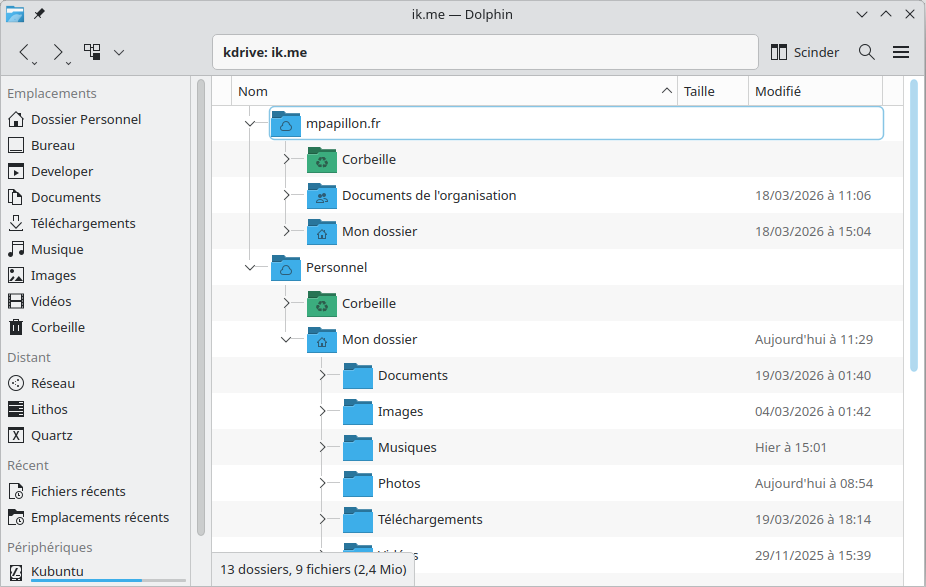

Développeur freelance
+10 ans d'expérience - backend, mobile et systèmes
Linux.
Core banking temps réel — Dans le cadre d'une néobanque, j'ai participé à la conception et au développement du moteur de traitement des opérations bancaires. Architecture événementielle en temps réel, conçue pour absorber les pics de charge et de gros volume de données.
App de suivi personnel — Application web que j'utilise au quotidien pour le suivi de budget et de consommation d'eau. Le choix de la simplicité avec une stack minimale : pas de framework, pas de SPA. Du HTML rendu côté serveur avec juste ce qu'il faut d'interactivité.
Application bancaire mobile — Développement, évolution et maintenance de l'application mobile de l'espace client d'une néobanque. Parmi les projets notables : la mise en place complète d'Apple Pay comme moyen de paiement, du provisioning des cartes côté serveur jusqu'à l'intégration du SDK Apple et la certification. Un projet transversal backend + mobile sur lequel j'ai participé.
Habitué à travailler avec des UX designers, je sais passer d'une maquette à un produit fonctionnel.
Plugin KIO — kDrive × Dolphin — Développement d'une extension pour le gestionnaire de fichiers Dolphin (KDE) permettant de naviguer, lire et écrire sur le stockage cloud kDrive d'Infomaniak directement depuis l'explorateur de fichiers, comme un disque local.

J'administre aussi mon propre serveur Linux (systemd, shell scripting, Docker).
Une architecture micro-service et événementielle avec Kafka peut être nécessaire. Mais un monolithe Go avec du HTML rendu côté serveur peut suffire. Tout dépend du contexte.
Je développe, je déploie, je maintiens. J'administre mon propre serveur, ce qui me permet d'intervenir aussi sur les aspects déploiement et exploitation.
Mes expériences m'ont habituées à lire et comprendre de grandes codebases avant d'intervenir. Je prends le temps de comprendre le contexte.
J'ai travaillé avec Scala, Go, Swift, TypeScript, Qt selon les projets. Ce qui m'intéresse c'est répondre au besoin. Je m'adapte à l'environnement technique.
Basé à Nantes, je travaille à distance ou sur site selon les besoins.